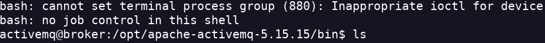

I begin by adding the target IP address to my local hosts file to ensure proper name resolution.
nano /etc/hostsNext, I perform a full port scan to identify open services running on the target host.
nmap -Pn -sV -sC -p- --open 10.10.11.243 -oN scan.txtThe scan reveals an exposed Apache ActiveMQ service. This immediately stands out as a potential attack vector.
Further research confirms that the service is vulnerable to CVE-2023-46604, which can be exploited to achieve Remote Code Execution (RCE).

After gaining initial access, I check which commands I am allowed to execute with elevated privileges.
sudo -lThe output shows that I can execute nginx as the root user. This allows me to start a web server with full privileges.
I copy the default nginx.conf file and place it inside
the /tmp directory, modifying it as needed.
I then start the Nginx service using the custom configuration file:
sudo nginx -c /tmp/pwnd.conf
With the server running as root, I can directly request sensitive
files hosted locally. I use curl to retrieve the
root flag.
curl 127.0.0.1:9001/root.txt
This successfully returns the contents of root.txt,
completing the privilege escalation.